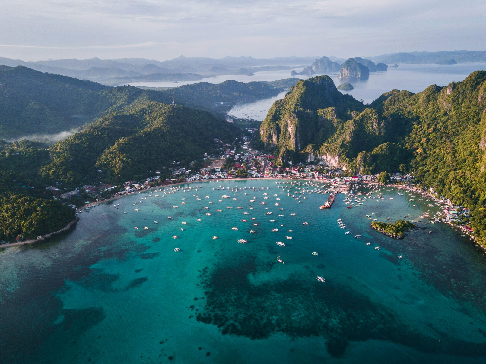
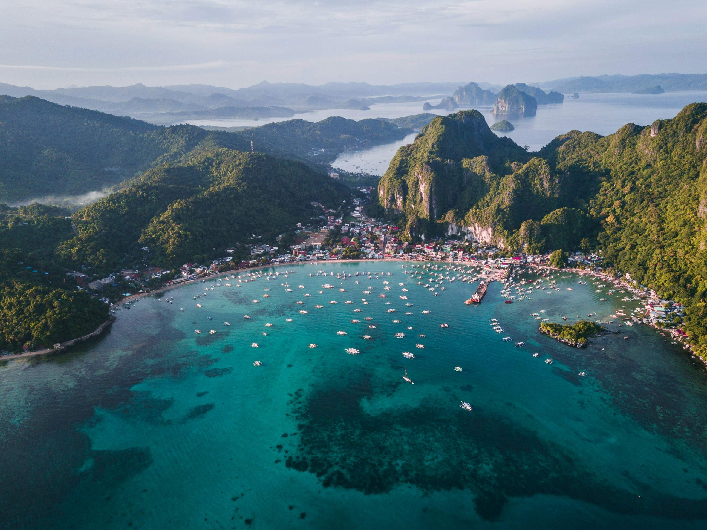

Welcome to the Philippines!
The Philippines is an archipelago in Southeast Asia consisting of over 7,000 islands, known for its rich cultural heritage, stunning natural landscapes, and vibrant festivals. Its capital, Manila, is a bustling metropolis, while destinations like Palawan and Boracay attract tourists with their pristine beaches and crystal-clear waters. The country is also renowned for its hospitable people and diverse cuisine.
Below are previews of your tour on this site:


 



Start your tour by clicking a link below: